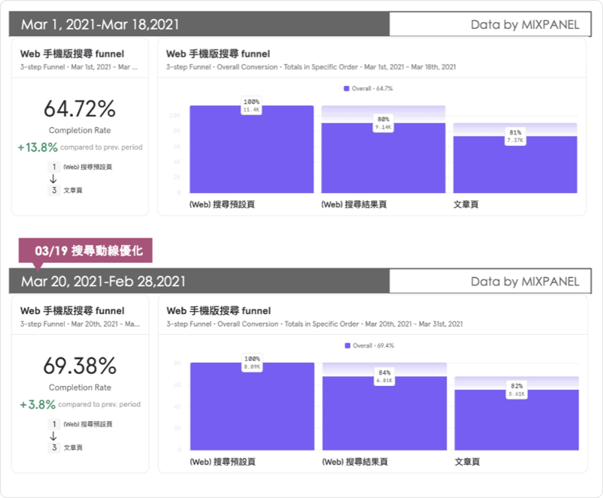
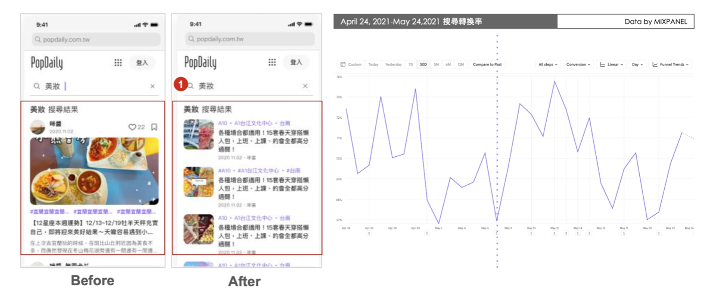
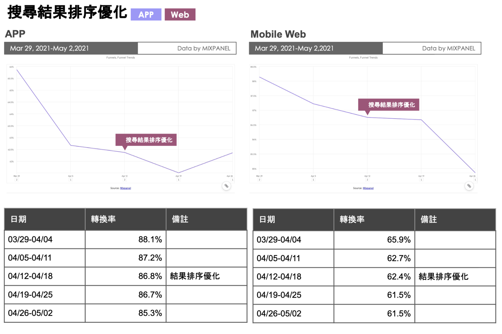

← 返回首頁


 ← 返回首頁
← 返回首頁
PopDaily - 提升搜尋轉換率
專案背景
什麼是 PopDaily？
PopDaily 是以 20-40 歲女性為受眾的內容平台，我負責提升網頁版搜尋轉換率，以數據驅動的方式迭代優化產品。其中解決方案包含排解正向流程的阻礙、與數據科學家協作調整演算法、調整 UI 畫面等。
目標
提升搜尋功能轉換率
在 PopDaily 網頁平台，搜尋功能使用深度不足，主要問題：搜尋結果頁 UI/UX 體驗不佳，且流程中存在摩擦點。目標是讓整體轉換率從 60% 顯著提升。
我的角色與具體工作內容
我的角色
負責迭代搜尋轉換方式的產品經理
具體工作內容
1. 查覺搜尋 API，洞察搜尋結果紀錄理解
搜尋平台的結果指數報告，高標搜尋面由 API 用戶識在關鍵字，壁到了 10 次搜尋優先各角，空率由 64.72% 提升至 69.38%


2. 調整 UI
與設計師協作，用 Mobile Web UI 提大到 6 以成成排序、合頁文字呈現

3. 使用者可以量化、連推搜尋結果
上提問度：Web 71/72，確立以品，讓搜尋先先者先先的先先先先先先先品
4. 配合數據部門，調整演算法
使用 3 種演算法 (v1 / v2 / v3)，分別以「後文章」、「30 天的文章轉支排序（Gaussian/Exponential Decay）」，決策後上線 v3（Exponential Decay）
關鍵成果與影響指標
觸擊數字，由搜尋 64.7% 提升至 71.5%
使用者觸擊，操作提進少，訪尋率直觀
流量結果，搜尋結果的優化性提升了 SEO 流量，約占了 SEO 總流量的 20%
遇到的挑戰與解決方式
挑戰一、前的演算法不恰當
數據部門在建立調整演算法時，很多現有的模型在面對長尾關鍵字時表現不佳。如果要讓搜尋優先達到目標，需要透過嚴謹的 A/B testing 方式，小部分流量上線後才能放大到全量用戶。
解決方案
與數據科學家密切合作，設計嚴謹的實驗框架，以 Exponential Decay 排序演算法取代舊有模型，並分批上線驗證效果。